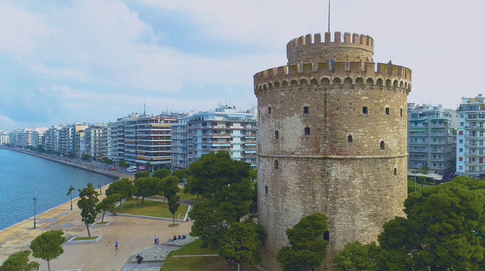
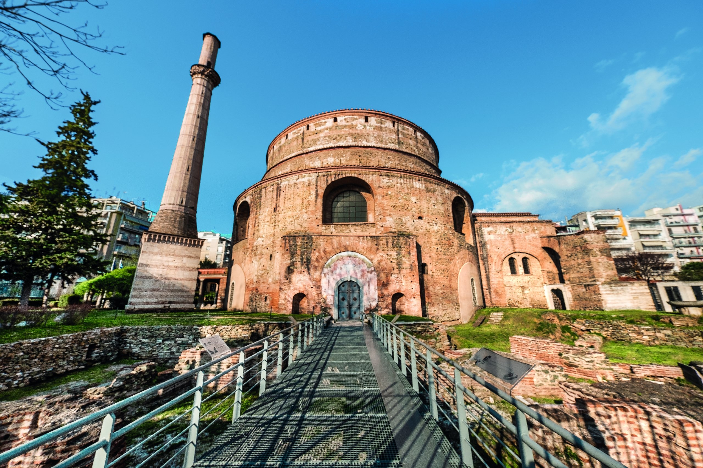
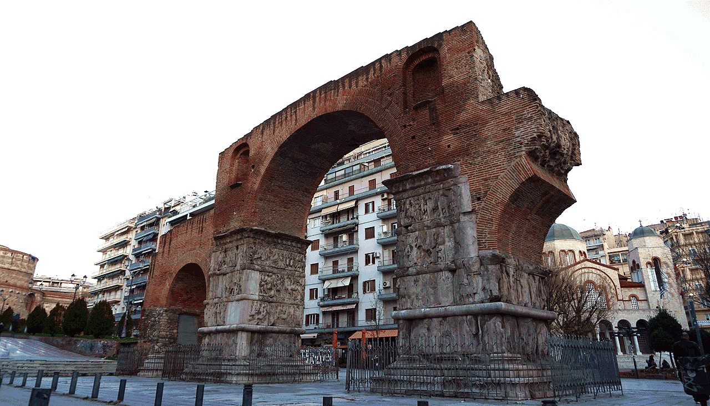
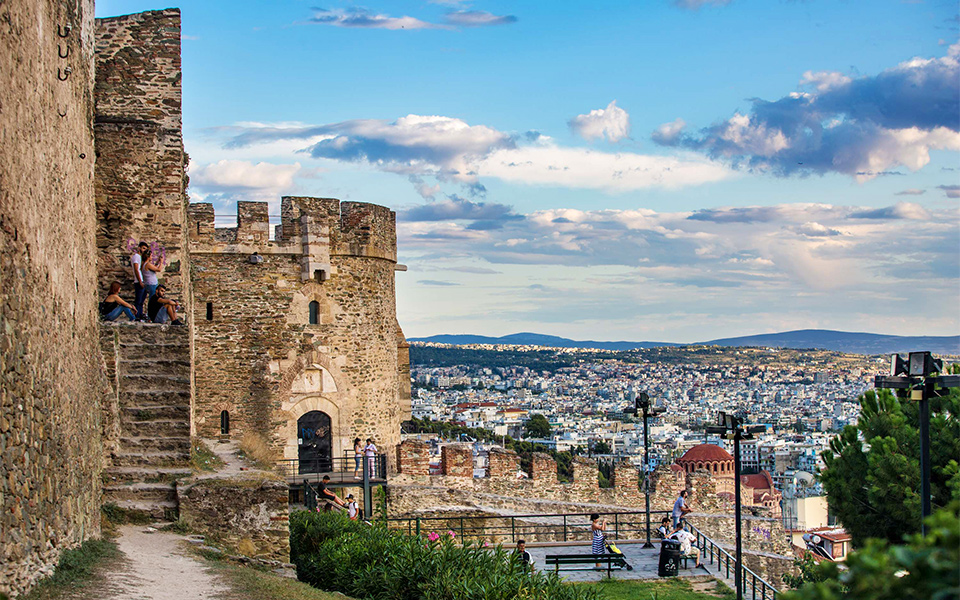
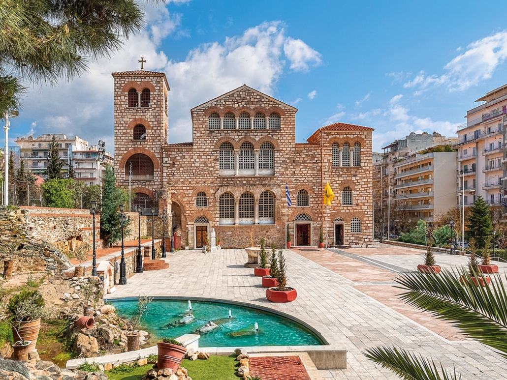
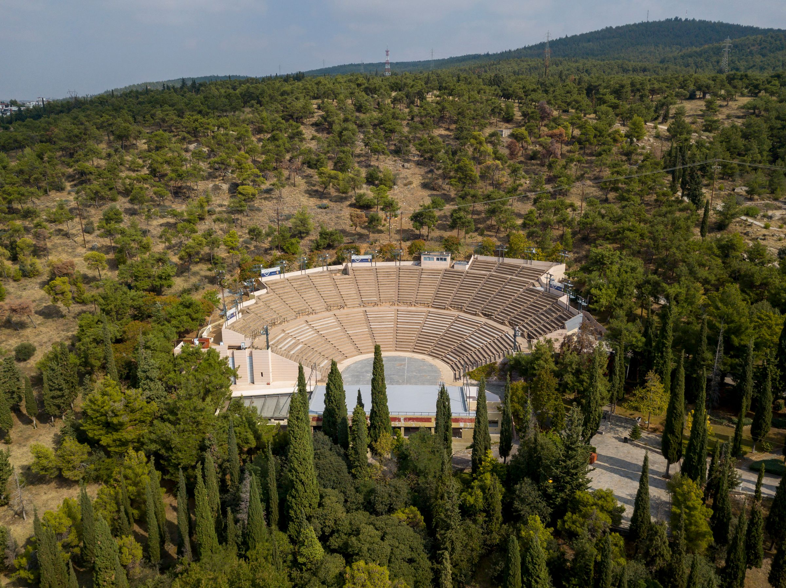

From Roman monuments to Ottoman towers and Byzantine walls, Thessaloniki has more than 2,300 years of history to explore. Here are five sights you should not miss.
The White Tower
The symbol of Thessaloniki stands on the waterfront. It was built by the Ottomans in the 15th century and was once used as a prison, before it was painted white at the end of the 19th century. Today it is a museum about the history of the city, and the walk to the top ends with a wide view over the sea and the promenade.
📍 Nikis Avenue, on the waterfront

The Rotunda
This huge round building was built by the Roman emperor Galerius around 300 AD. Over the centuries it has been a temple, a Christian church and a mosque, which is why a minaret still stands next to it. Look up inside to see the early Christian mosaics. It is part of a UNESCO World Heritage Site.
📍 Agiou Georgiou Square, near Egnatia Street

The Arch of Galerius (Kamara)
Locals simply call it "Kamara" and use it as a meeting point. The arch was built around 300 AD to celebrate a Roman victory over the Persians, and its marble reliefs still show soldiers, horses and battle scenes. It stands right on Egnatia Street, on the same Roman road that once crossed the Balkans.
📍 Egnatia Street, between the Rotunda and Navarinou Square

Ano Poli (Upper Town)
Climb the hill to the old Upper Town, which survived the great fire of 1917. Narrow cobbled streets, colourful old houses and small tavernas lead up to the Byzantine walls and the Heptapyrgion fortress. Come before sunset for the best view of the city and the Thermaic Gulf.
📍 North of the city centre, along the old city walls

Church of Agios Dimitrios
The church of the city's patron saint dates back to the 5th century. It was badly damaged in the fire of 1917 and carefully rebuilt, keeping many of its old columns and mosaics. Do not miss the crypt underneath, built over old Roman baths. The church is also part of the UNESCO World Heritage Site.
📍 Agiou Dimitriou Street, above Aristotelous Square

Lazaristes Monastery
Moni Lazariston (Lazarist Monastery) is a historic 19th-century religious building and major contemporary cultural center located in Stavroupoli, in the western suburbs of Thessaloniki, Greece (Kolokotroni 21-27). Design: Features an imposing neoclassical and Renaissance-inspired architecture.
📍 Thessaloniki, Stavroupoli
